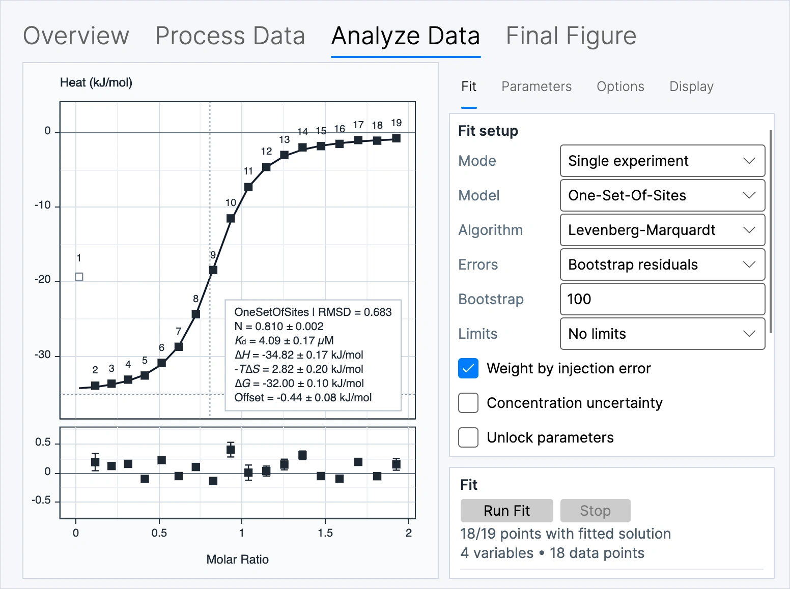
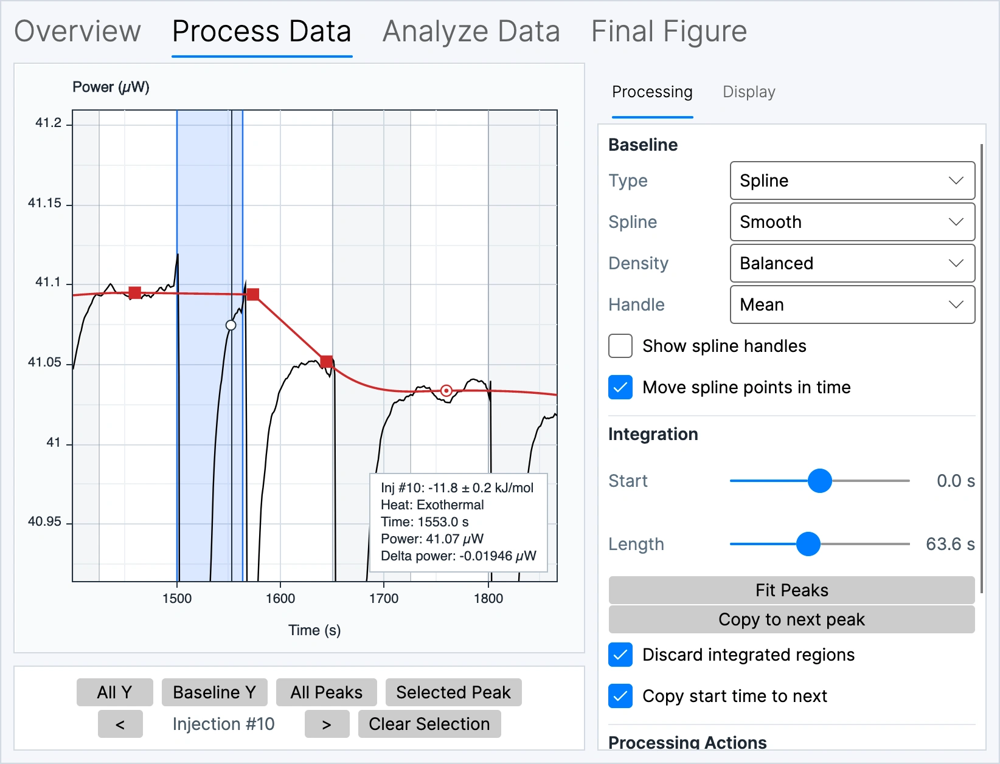
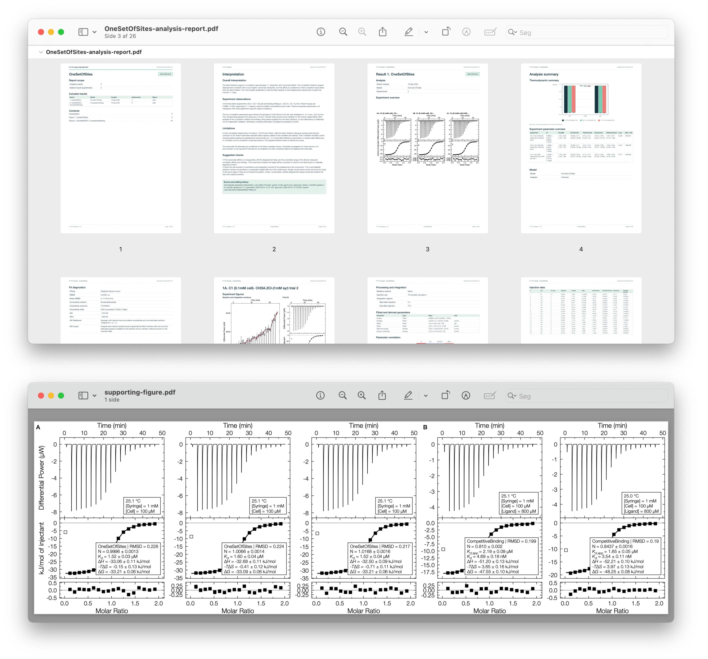

.itc
MicroCal raw data
Open raw ITC experiments for inspection, baseline fitting and integration.
The desktop analysis workspace
FT-ITC Analysis is a free, open-source desktop workspace for importing, processing, fitting and presenting ITC data, with direct controls for processing, fitting, uncertainty estimation, figure preparation and complete analysis reports.

Choose your platform for availability, system requirements and installation guidance.
ITC file formats
Import compatible raw data, vendor projects and integrated heats, including native .nitc and Origin .opj files.
.itc
Open raw ITC experiments for inspection, baseline fitting and integration.
.nitc
Open native TA Instruments NanoITC thermograms with their injection schedule and experiment metadata ready for processing.
.ta
Import TA Instruments / NanoAnalyze exports for processing and analysis.
.apj
Import the raw thermogram and injection information from the first experiment in a PEAQ-ITC project.
.opj
Import the first recognized ITC worksheet as a raw thermogram when available, or as integrated heats otherwise.
.dat · .aff · .dh
Bring compatible integrated heat data into fitting and further analysis.
Advanced processing
Refine baselines with precise control and adjust integration regions quickly. Start from a polynomial or segmented baseline, or edit spline points directly for difficult thermograms. Drag individual boundaries, estimate endpoints with Fit Peaks, or copy a region to the next injection to keep processing fast and consistent.

Correct target heats with a processed reference using matched, linear or exponential-decay subtraction. Original integrated heats remain unchanged, while target and reference processing uncertainties are combined.
Join consecutive thermogram segments into a new processed tandem experiment using simple concatenation, fixed back-mixing or automatic back-mixing.
Multiple-experiment analysis
Fit related datasets in one combined analysis. Keep parameters experiment-specific, share selected values across the series, or apply supported temperature-dependent relationships.
Connect multiple isotherms in one global optimization by sharing supported parameters or applying temperature-dependent constraints, while retaining experiment-specific values where needed.
Use compatible One-Set-Of-Sites results to investigate temperature dependence, salt effects and proton linkage when the experiment series and metadata meet the analysis requirements.
Figures and reports
Create publication figures, arrange related experiments into supporting panels, and assemble complete analysis reports directly from your saved results.
Bring thermograms, integrated heats, fitted curves and residuals together in a final figure. Use Supporting Figure to arrange experiment and result plots on one multi-panel canvas, with consistent sizing, typography and panel labels.
View an example final figure →
Configure the thermogram, fitted-heats and residual panels, choose the information to include, and export a publication figure as PDF.
Prepare a final figure →Combine figures from experiments and analysis results. Set the panel order, grid, dimensions and labels for a coordinated supporting figure.
Compose supporting figures →Assemble saved results into a structured PDF with figures, parameter tables, diagnostics and optional advanced analyses. Add your interpretation and include supporting experiments to document the study.
Build an analysis report →Optional hosted interpretation
Automatic machine interpretation is an optional extra feature that runs on a separate third-party service. Extended access requires registration. You can always create reports locally and add your own comments without registration.
Local-first by design
FT-ITC Analysis does not require an account or upload your experimental data to an FT-ITC service. The desktop application runs locally, while the public repository makes the code and release record available for inspection.
Optional automatic machine interpretation can help you review saved results and prepare a first-pass narrative. It runs as a separate hosted service; local processing, fitting and report creation remain available without registration.
When you want to share a project, open its .ftxtc file in the web viewer for browser-based review without installing the desktop application.
The project is distributed under the MIT License. Use GitHub to access releases, source code, issue reporting and the citable software record.
Visit the repository ↗